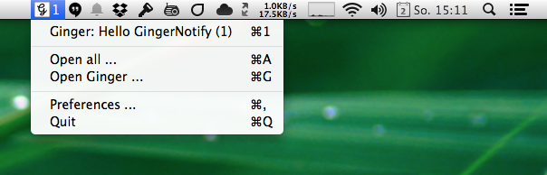

GingerNotify
A OS X menu bar application to notify you about the latest unread discussions of your Ginger teams.

You can either compile the application yourself or download a pre-compiled version:
- Version 2.4 (Build 8) — 2014-02-02
Local Development
git clone git@github.com:lincolnloop/GingerNotify.git
cd GingerNotify
git submodule init
git submodule update
To compile a DEBUG release simply do:
xcodebuild -configuration Debug